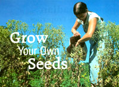
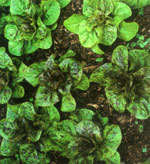
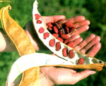
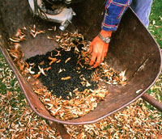
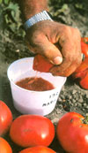
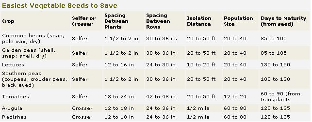

Seed saving has helped humans grow their own food in the face of changing demands and environmental pressures ever since they began planting seeds. Historically, home seed saving was how uniquely adapted crop varieties were handed down from generation to generation for continued selection and adaptation.
Farmers and gardeners routinely saved the seed of their crops until the turn of the 20th century, when commercial agricultural interests planted the false idea among them that only skilled professionals were capable of handling this job.
Today, good reasons remain to continue saving seed of your own best garden vegetables. Open-pollinated pre-1970's vegetable varieties are fast disappearing from the commercial marketplace, pushed out by the "latest and greatest" new hybrids. Saving and sharing seed of such older varieties helps preserve their rich genetic heritage for farmers and gardeners of the future, and allows you to rub shoul ders with your ancestors. And if these varieties are to be saved, home gardeners will have to do it; most of the professionals are headed another way.
Many home gardeners feel a sense of empowerment and satisfaction when they rely on their seed-saving abilities-one of the oldest basic human skills-to build up personal seed stocks as they strive for self-sufficiency. And with many seeds now costing $2 or more per packet, saving some of your own also can save you cold hard cash.
Seed saving also helps you develop a better working knowledge of your crops and even improve varieties to meet specific contemporary needs or growing conditions. (For examples of how you can create exciting new varieties, see "Making Good Seeds Better," Page 57.)
Three basic factors you need to consider when you want to save seed from a particular crop: 1) establishing the right separation distance to keep seed plants from crossing with other varieties of the same species; 2) correct population size - saving seed from more than just a few plants to maintain genetic diversity; and 3) harvesting when seed is mature, then cleaning and drying it properly. The chart on Pages 60 and 61 gives these details on seven easy-to-save crops.
Beans, peas and Southern peas are easy to save because they make harvestable seeds in the pods being produced as the vegetable crop. All you need to do is to let the pods fully mature on the plant in order to gather seeds. Tomatoes also are an easy beginning crop; they bear mature seeds as a natural consequence of producing ripe fruit.
These four crops and lettuce also are naturally self-pollinated, which means each plant is pollinated primarily from its own pollen, making it much easier to maintain distinct varieties. Such a seed crop plant is called a "selfer." In contrast, other common crops, including corn, squash, carrots and beets, are called "crossers" because before they can produce seeds, one plant usually is cross-pollinated with pollen carried by wind or insects from a different plant.
To properly manage selfers and crossers, seed savers need to know the minimum distance that each variety should be from any other sexually compatible ("crossable") varieties growing nearby. Called "isolation distance," this spacing depends on whether the variety is self-pollinated or cross-pollinated.
For self-pollinated crops like beans, peas, peppers and tomatoes, the ideal distance between two varieties to ensure no crossing should be 50 feet. However, many seed savers and some seed companies report only infrequent crosses at 20 feet. Frank Morton, lettuce breeder for his company, Wild Garden Seed, in Philomath, Oregon, confirms that lettuces seldom cross when planted 20 feet apart "even in the presence of a number of insect pollinators."
Saving seeds of cross-pollinated crops is more challenging. With "crossers," you must grow only one variety of each crop type per year. It also is important to know if neighboring gardens or farm fields have any related crops that could spread their pollen to your seed crop. Crossers arugula and radish make good crops for a beginner to try because relatively few gardeners grow arugula or allow their radishes to go to seed.
Healthy plants, unfettered by space restrictions, produce much more seed per plant than plants growing in crowded conditions. But many people plant their seeds more densely in a row than-recommended on seed packets. For example, green beans should be planted at the rate of six to eight seeds per foot per row, but frequently, overzealous gardeners plant them at twice that rate.
If you're planning to save seed, plant row crops like beans and peas even more sparsely (four to six seeds per foot) to encourage maximum aeration, which helps reduce possible bacterial or fungal rot on the pods should wet conditions develop.
Plant lettuce for seed saving at the recommended rate on the seed packet.
Handle radishes differently. Pull and spread out the entire crop in a shady spot to select the best ones in terms of color, shape and good health. Trim off the oldest leaves of those plants, and replant the roots in a new spot at 12- to 18-inch intervals in the row.
Many gardeners know that considerable leeway-as much as six weeks for beans and peas, and even more for arugula, lettuce and radish-exists wits respect to how late you can plant and still get a harvest before it freezes. This isn't the case for crops being grown for seed. Plant breeder Morton says a full 150 to 180 days are needed to produce viable lettuce seed at his western Oregon farm. For the seed to mature by late September at the earliest and by the middle of October at the latest, he must have planted the crop by mid-April.
For Southern gardeners with long growing seasons, Southern peas, including crowder, black-eyed and pink-eyed peas, are good choices because they produce a healthy seed crop under hotter conditions than the other crops on this list. They also are an excellent seed crop choice because many of the once-numerous Southern regional favorites are in dire need of preservation.
Many novice seed savers collect seed from just a couple of plants, Unfortunately, this practice tends to narrow genetic variation in the variety, and over a number of generations, it can cause a variety to change and eventually lose some of the unique traits that made it special in the first place.
The population size for cross-pollinated crops is even more important than for selfers. Genetic variation from plant to plant in any particular crosser is considerably greater than in most selfers. This means that no one plant in a stand of crosser plants contains all of the particular traits (and the genes determining those traits) that comprise that variety. Crossers "openly pollinate" with other plants of their variety, sharing their genes with any other plant in that group each time they reproduce. The chart on Pages 60 and 61 tells you the recommended number of plants for seed collecting.
Seeds harvested before they reach maturity will have a low germination rate and any resulting seedlings may lack vigor and may be more susceptible to disease, especially under stressful conditions.
Dry-seeded crops like beans, peas, Southern peas, radishes and arugula make seed in pods that signal when the crop is ready to harvest. Collect pods when they have completely dried, turned beige or light brown in color, and are crisp and easy to crack open.
When pods look and feel ready, harvest them quickly or risk losing them to either too much moisture or a lack of it. Wetness from rain and dew encourages rot; overly dry conditions leave the pods susceptible to splitting open (shattering) and spilling their seeds on the ground.
To harvest pod-bearing seed crops, cut the entire plant near its base. Lay out cut plants a single layer deep on a tarp in the sun. If rain is forecast or if wind is excessive, place the plants on a cement or wooden floor inside a warm, airy structure. After several days, "thresh" the seeds from the pods by picking up a few plants at a time and whacking them against the bottom of a large container, such as a wheelbarrow, that has sides at least a foot high. This works well with crops like arugula and mustard, which have pods that easily release their seeds, but many bean and pea plants are not so easily threshed. They can be shelled out by hand or you can "dance" gently on cloth bags filled with these plants to get the pods to shatter. Take care not to overdo it: Any damage to the seed itself can destroy its ability to germinate or shorten its storage life considerably.
After threshing, "winnow" the seed with the help of a good stiff breeze or fan. Winnowing is the act of cleaning the seed of debris, called chaff, which is mainly pieces of pods and stems.
To winnow, slowly "spill" uncleaned seed from one container to another while the breeze or a fan blows the broken pods and stems away. Two 5-gallon buckets, or for smaller quantities, two rectangular dishpans, work well for this task. The debris will blow over the top edge of the bottom bucket or pan while most of the good seed will fall into it. Repeat the process several times until the seed is cleaned.
After harvesting a dry-seeded crop, spread the seed to be saved out on a clean, dry surface that is out of the sun and protected from the wind, but in a warm, dry place. Make sure cross ventilation is good (fans come in handy for this) but not strong enough to blow the seed off the drying surface.
Determining the maturity of wet-seeded crops such as tomatoes and peppers, which bear their seed inside the fruit (yes, botanically, these are the fruit), is much easier than with dry-seeded crops. With wet-seeded crops, when the fruit is ripe, the seed is, too. Viable tomato seed can be extracted from fruit picked at the perfect eating stage, but the quality of the seed will be superior if you allow selected fruit to overripen on the plants for just a few days. Don't allow the fruit to start rotting, though, because fungal or bacterial growths could damage the seed.
A wet-seeded crop should be spread out thinly on a screen (best) or a clean, nonstick cookie sheet or tray. Place the screen or tray in a warm, dry place, out of the sun, with plenty of airflow, which can be facilitated by a fan. Both wet- and dryseeded crops should be stirred once or twice a day during this stage to assure even drying.
Master seed saver Suzanne Ashworth, author of the seed-saving manual Seed to Seed (see MOTHER's Bookshelf, Page 120), says flat seed should break instead of fold if it is dry enough to store, and hard-shelled seed like corn or beans should shatter, not mash, when struck with a hammer.
Always store seeds in cool, dry conditions. In most locations, breathable paper envelopes work well with smaller quantities of seed. In dry climates, muslin sacks are good for larger quantities, and in humid locations, airtight containers such as glass canning jars work best, but you should be sure the seed is perfectly dry before placing it in the container. For several years of successful storage, seed should he stored where temperature and humidity fluctuate as little as possible; never put seed in an attic or an outdoor shed. Many seeds will retrain viable for six to eight years if kept cool and dry.
John Navazio, Ph.D., is director of seed grower development at the Abundant Life Seed Foundation in Port Townsend, Washington, and owner of his own company, Seed Movement, in Bellingham, Washington.
|
 David Cavagnaro Flashy Trout Back,' (bottom) and 'Forellenschluss, 'lettuce (top) |
 Satori Images Beans are one of the easiest crops suited to home seed saving. |
 David Cavagnaro Dry seed may be hand threshed into a wheelbarrow and then cleaned of debris, called chaff. |
|
 David Cavagnaro |
 David Cavagnaro |
 |